For deployment model option 1, the IIDR source database agent should be installed on a source database server.
The following instructions should be followed to complete the installation for the IIDR MSSQL Agent on the SQL Server database server.
The IIDR MSSQL Agent should be installed on the same server where MSSQL database is running
Login to the server as the OS user that was defined in
Download the IIDR MSSQL software (ask Gigaspaces customer support for a most updated IIDR software download link). For example, the IIDR Agent of 11.4.0.4 version is delivered in a form of an exe file : setup-iidr-11.4.0.4-5672-x86.exe
Perform the following steps to start the IIDR Agent installation
Open an ms-dos command prompt and set the JAVA_TOOL_OPTIONS variable with the following value:
set JAVA_TOOL_OPTIONS="-Dos.name=Windows Server 2016"
From the same DOS session, start the IIDR Agent installer.
C:\Users\dih\Downloads>setup-iidr-[version #].exe
Now install the new product: Under Introduction, select Install new product:
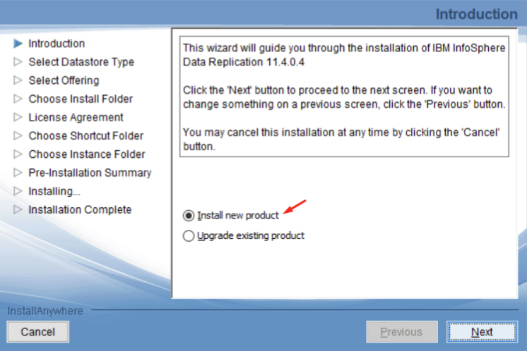
Under Select Datastore Type, select Microsoft SQL Server:
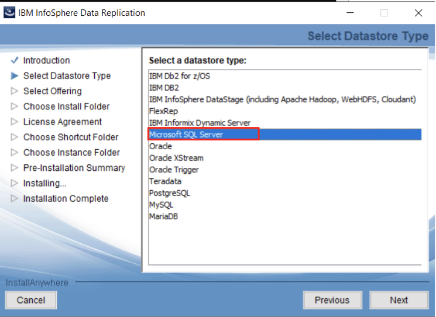
Under Select Offering, select IBM InfoSphere Data Replication:
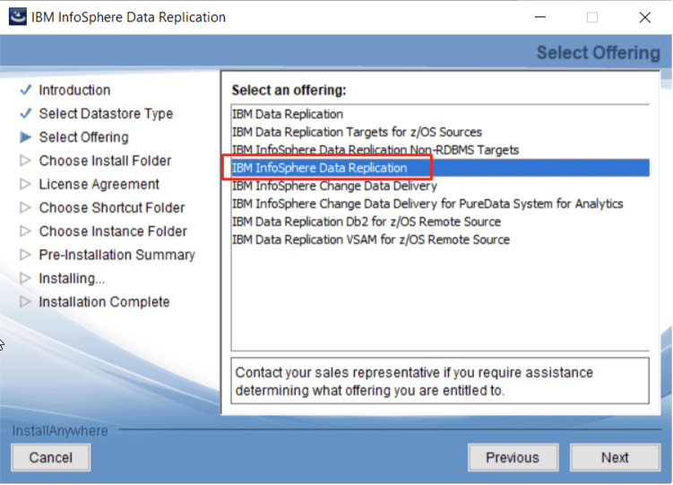
Under Choose Install Folder, keep the default installation folder:
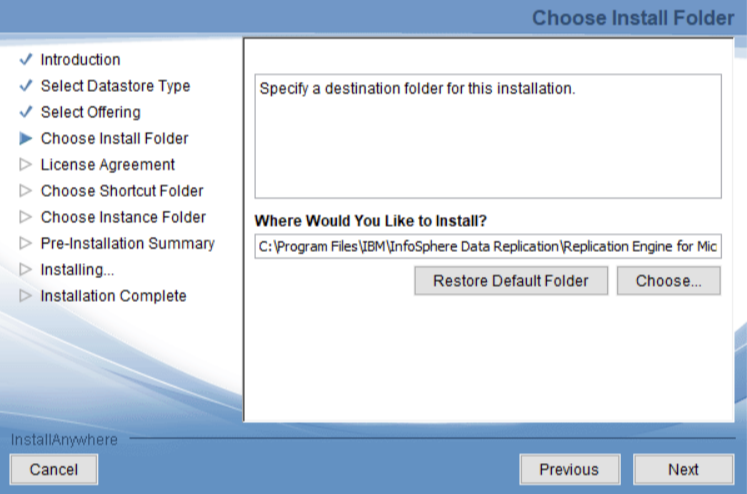
Under, License Agreement accept the license terms agreement:
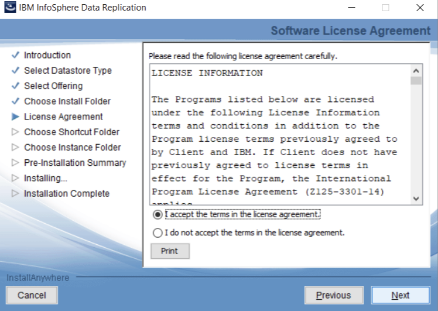
Under Choose a Shortcut Folder, select On the Desktop for more convenient access:
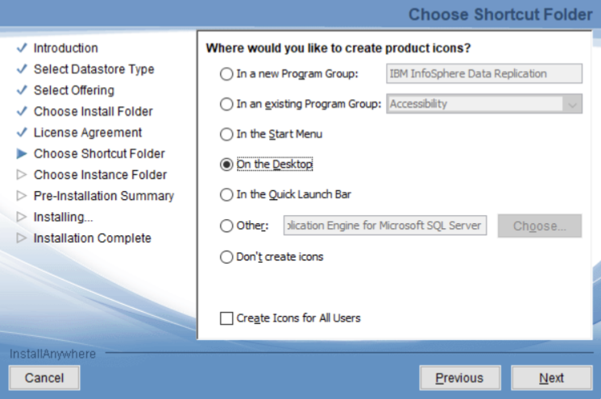
Under Choose Instance Folder, keep the default location for the creation of instance and product logs:
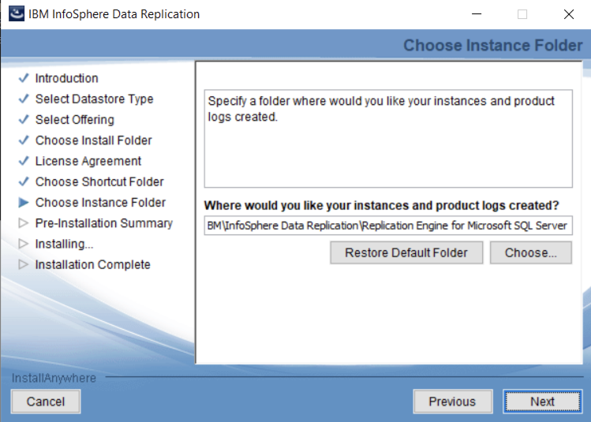
Start the installation:
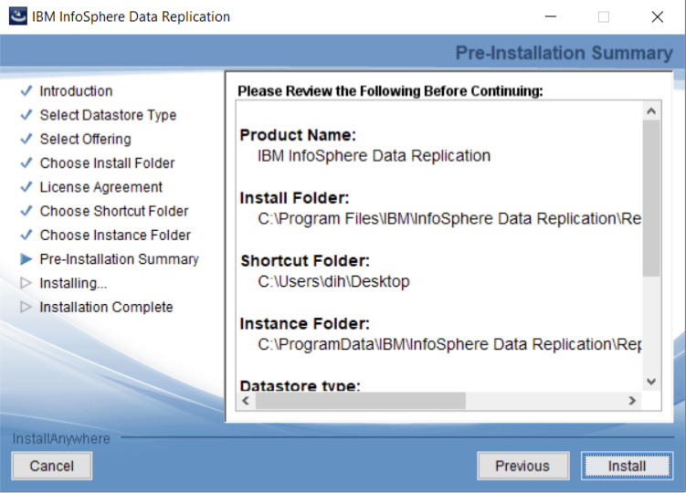
At the conclusion of the IIDR software installation process, select Launch Configuration Tool as this must be launched:
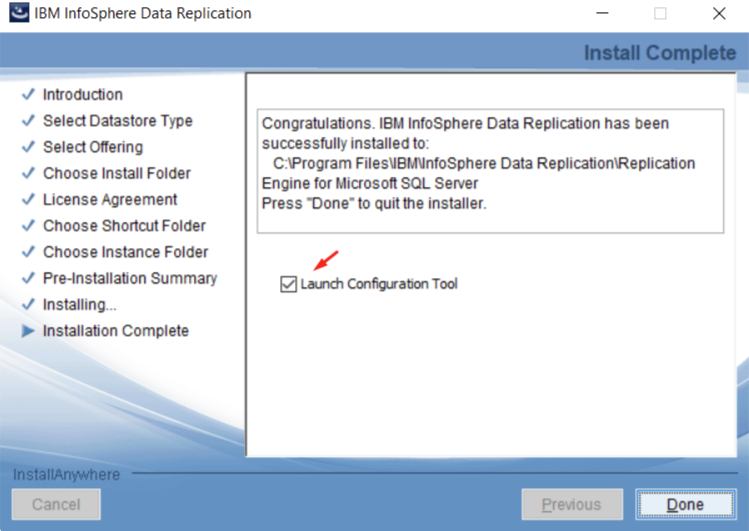
Once the IIDR Agent instance configuration tool has been launched, complete the IIDR Agent configuration by following these steps:
In the Instance Configuration tab, enter the following parameters in the Instance section:
Name: MSSQL
Staging Store Disk Quota (GB): Reduce from the default of 100GB to 1GB
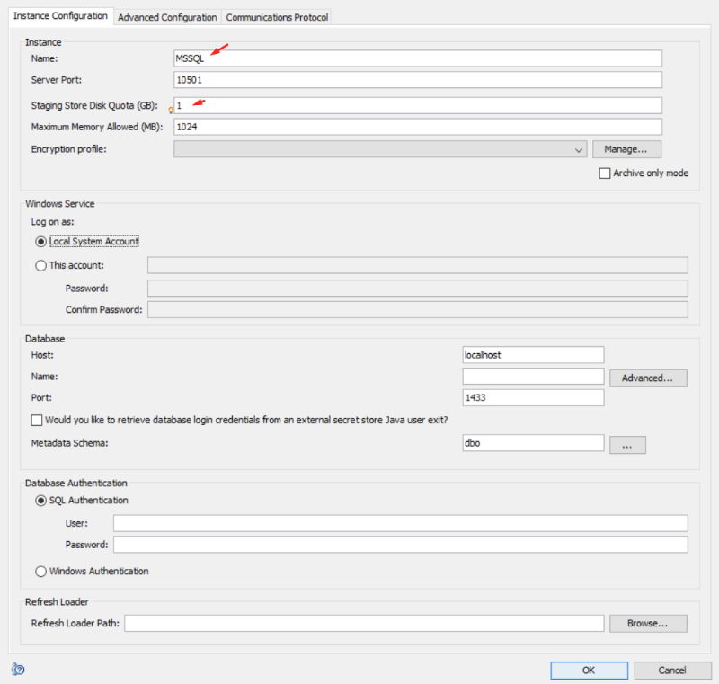
Define the encryption profile.
Under Encryption profile, click Manage:
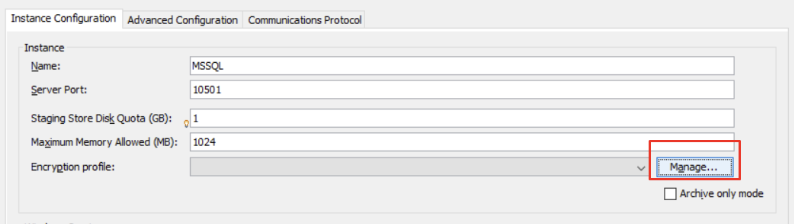
Click Add to add a new encryption profile:
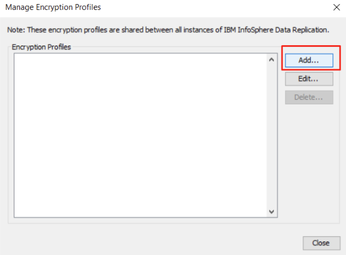
For the new encryption profile, provide the following parameters:
Profile name: dummy
Encryption: Disabled
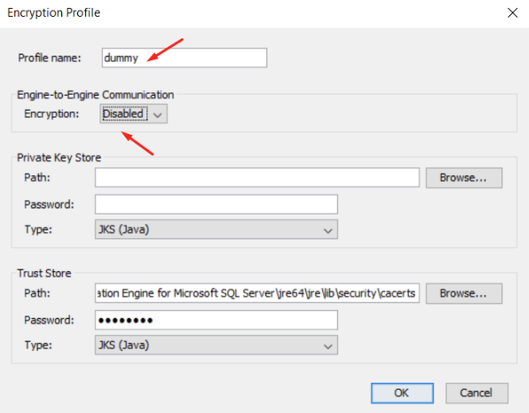
Returning to the In the Instance Configuration tab, under Encryption profile, select dummyas the working encryption profile for this agent:
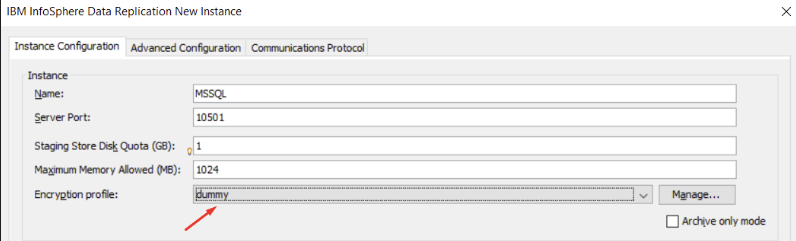
In the Instance Configuration tab's Database section under the Database Authentication and Refresh Loader sections populate using the following parameters:
Name: dev1 (for example)
User and Password: Use those defined in the prerequisite step
Refresh Loader Path: Choose a folder
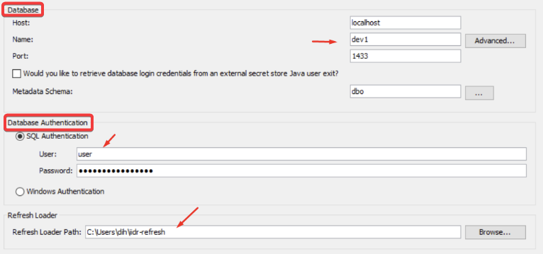
Start the IIDR Agent creation
For the newly created MSSQL database you may get the following message at the end of the IIDR instance creation. This means that database requires a full backup. Ask the DBA to complete a full database backup.
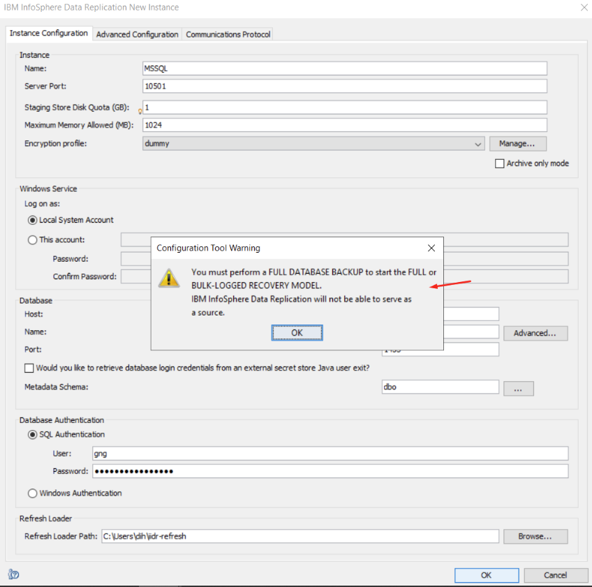
Start the IIDR Agent instance:
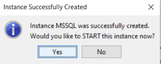
A successfully started IIDR Agent instance will look similar to this:
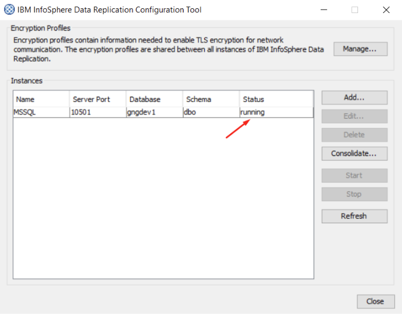